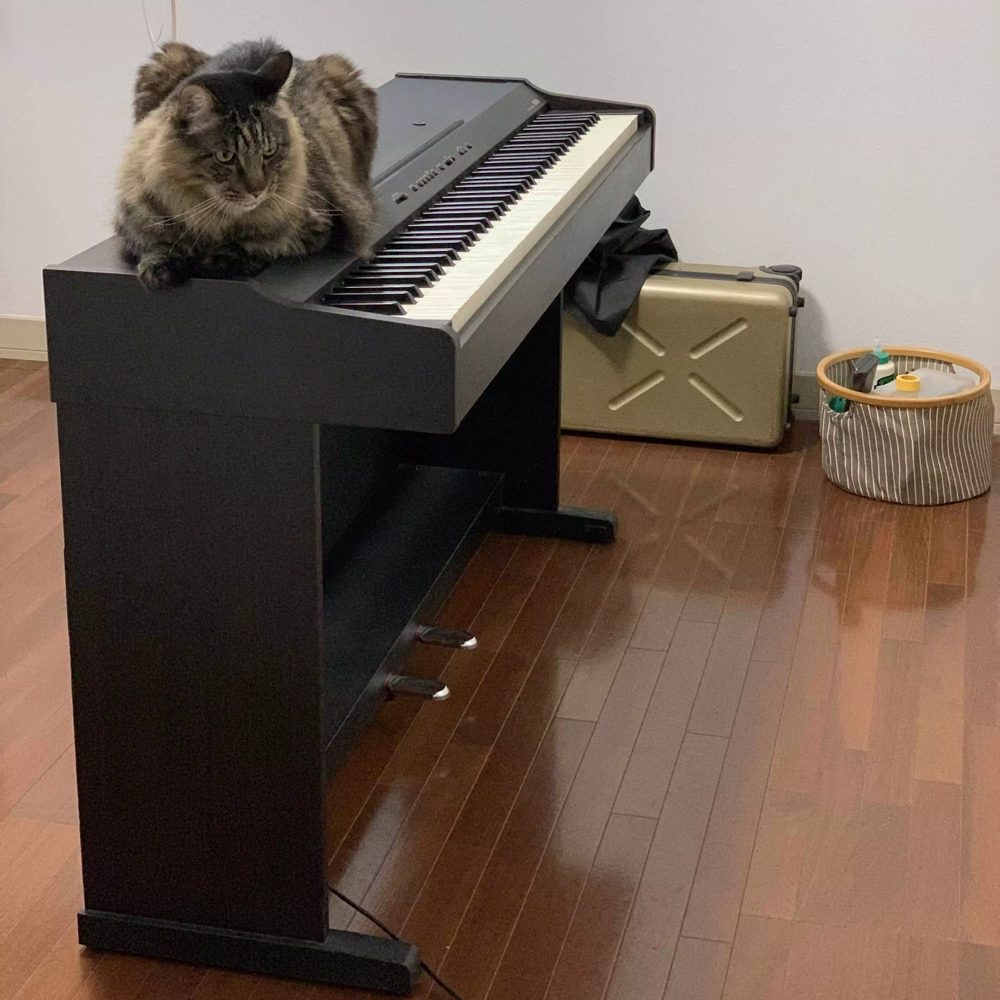

スピーカーから音が出なくなった電子ピアノ(YAMAHA YDP-88)を修理。実家に帰ったついでに修理しました。
弟が使っていた電子ピアノ(1995年製)ですが、しばらく使わないうちに音が出なくなっていたそうです。 裏側の端のネジを二つ外すと蓋が開きました。
古い製品なのでアンプなどのコンデンサあたりが飛んでいるのかと思いきや、基板表面は綺麗。 弟曰く、ヘッドホンだと聞こえるような、というヒントから、 ジャックの故障かな、というところでジャック関連の基板上を追ってみると、 プラグが刺さっていない状態で導通するべき部分で導通しないことを発見。 幸いにも、ジャックが二つ乗っている物だったので、違いをテスターですぐに見つけることができました。
ジャックが二つ乗っている
ジャック内部のスイッチが故障しているようで、ジャンパーを雑に設置。 ここのジャックはテープで塞いでしまいました。
ジャンパーを雑に設置
無事に音がなるようになりました。キー自体は無事なので、もうしばらく使えそうです。
